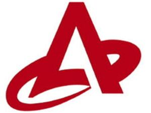

Trade Mark Journal No.2025/032 8 August 2025
WO0000001865595 (1,4,12,16,25)
Office of origin: Japan
Date of International Registration:14 March 2025
Date of designation in the UK:
14 March 2025

Red.
International priority date claimed: 21 October 2024
(Japan)
- Class 1
- Coolants for vehicle engines; brake fluid; transmission fluid; power steering fluid; fluids for hydraulic circuits; clutch fluids; chemical additives for engine oil and gear oil; chemical additives for transmission fluids; chemical additives for lubricants; hydraulic oils.
- Class 4
- Mineral oils and greases for industrial purposes [not for fuel]; industrial oil; engine oils; gear oils; motor oil; suspension oil; lubricating oils and greases for vehicles; non-mineral oils and greases for industrial purposes [not for fuel]; solid lubricants.
- Class 12
- Shock absorbers, machine elements for land vehicles; springs, machine elements for land vehicles; brakes, machine elements for land vehicles; two-wheeled motor vehicles; parts and fittings of two-wheeled motor vehicles; wheel suspensions; rear suspensions; air suspensions; brakes for motorcycles; brake discs for motorcycles; brake pads for motorcycles; brake calipers for motorcycles; brake cylinders for motorcycles; front forks for motorcycles; brake pedals for motorcycles; brake rotors for motorcycles; brake levers for motorcycles; brake cables for motorcycles; shock absorbers for motorcycles.
- Class 16
- Stationery; paper and cardboard; printed matter; stickers [stationery]; posters; photographs [printed].
- Class 25
- Clothing; tee-shirts; hosiery; socks and stockings other than special sportswear; gloves and mittens [clothing]; neckties; headgear for wear; hats; belts [clothing]; footwear [other than special footwear for sports]; special footwear for sports; clothes for sports, other than clothes for water sports.
Hitachi Astemo, Ltd.
Representative: INFORT PATENT FIRM, 14F Kioicho Bldg.,, 3-12 Kioicho,, Chiyoda-ku, Tokyo 102-0094, JAPAN